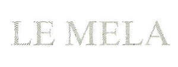

Trade Mark Journal No.2025/032 8 August 2025
UK00004241708 30 July 2025 (14,16)
Mark 1
LE MELA
Mark 2

- Class 14
- Jewellery; Necklaces [jewellery]; Jewellery, including imitation jewellery and plastic jewellery; Pendants [jewellery]; Bracelets [jewellery]; Ornaments [jewellery]; Pearls [jewellery]; Trinkets [jewellery]; Necklaces [jewellery, jewelry (Am.)]; Jewelry; Fashion jewellery; Gold jewellery; Lockets [jewellery]; Jade [jewellery]; Charms [jewellery]; Charms for jewellery; Jewellery charms; Clasps for jewellery; Pearls [jewellery, jewelry (Am.)]; Ornaments [jewellery, jewelry (Am.)]; Items of jewellery; Jewellery items; Trinkets [jewellery, jewelry (Am.)]; Rings [jewellery]; Rings being jewellery; Bracelets [jewellery, jewelry (Am.)]; Jewellery stones; Wristlets [jewellery]; Charms [jewellery, jewelry (Am.)]; Lockets [jewellery, jewelry (Am.)]; Chains [jewellery, jewelry (Am.)]; Rings [jewellery, jewelry (Am.)]; Jewellery products; Precious jewellery; Necklaces [jewelry]; Jewellery chains; Chains [jewellery]; Jewellery in semi-precious metals; Medallions [jewellery, jewelry (Am.)]; Jewellery chain; Jewellery boxes; Amber pendants being jewellery; Jewellery for personal adornment; Imitation jewellery; Pendants [jewelry]; Jewellery chain of precious metal for necklaces; Cabochons for making jewellery; Silver thread [jewellery, jewelry (Am.)]; Jewellery for pets; Personal jewellery; Jewellery incorporating diamonds; Jewellery in non-precious metals; Clips of silver [jewellery]; Jewellery findings; Sterling silver jewellery; Jewellery incorporating pearls; Bracelets [jewelry]; Pearls [jewelry]; Jewellery articles; Articles of jewellery; Jewellery made from gold; Jewellery made from silver; Jewellery chain of precious metal for anklets; Diamond jewelry; Wire of precious metal [jewellery, jewelry (Am.)]; Jewellery containing gold; Jewellery chain of precious metal for bracelets; Lockets [jewelry]; Dress ornaments in the nature of jewellery; Jewellery in precious metals; Jewellery of precious metals; Clasps for jewelry; Threads of precious metal [jewellery, jewelry (Am.)]; Trinkets [jewelry]; Jewellery for personal wear; Jewellery cases; Jewellery fashioned from non-precious metals; Charms [jewelry]; Jewelry charms; Charms for jewelry; Jewellery rope chain for necklaces; Jewellery fashioned of semi-precious stones; Finger rings; Diamonds; Cut diamonds; Sapphires; Gemstones; Tanzanite being gemstones; Emeralds; Tourmaline gemstones; Precious gemstones; Semi-precious gemstones; Chalcedony used as gems; Jewels; Synthetic stones [jewellery]; Artificial gemstones; Gemstones, pearls and precious metals, and imitations thereof; Gold earrings; Platinum jewelry; Gold rings; Opals; Gems; Platinum rings; Precious and semi-precious gems; Cuff links of precious metals with semi-precious stones; Topaz; Synthetic precious stones; Sapphire; Gold necklaces; Gold bracelets; Olivine [gems]; Precious jewels; Semi-precious stones; Precious and semi-precious stones; Jewellery made of precious stones; Jewellery being articles of precious stones; Articles of jewellery with precious stones; Cuff links made of precious metals with semi-precious stones; Cases of precious metals for jewels; Rings [jewelry]; Pearls; Gold plated earrings; Artificial stones [precious or semi-precious]; Gold plated rings; Chain mesh of precious metals [jewellery]; Precious stones; Jewellery incorporating precious stones; Ring bands [jewellery]; Natural gem stones; Platinum ingots; Jewellery made of crystal coated with precious metals; Gold; Chains made of precious metals [jewellery]; Cuff links made of precious metals with precious stones; Semi-finished articles of precious stones for use in the manufacture of jewellery; Rings [jewellery] made of precious metal; Jewellery plated with precious metals; Rings coated with precious metals; Gold plated bracelets; Gold chains; Jewellery coated with precious metals; Ornaments, made of or coated with precious or semi-precious metals or stones, or imitations thereof; Cabochons; Cabochons for making jewelry; Imitation precious stones; Cases for jewels; Silver earrings; Articles of jewellery with ornamental stones; Jewelry boxes of precious metals; Jewellery boxes of precious metals; Jewel pendants; Silver rings; Earrings of precious metal.
- Class 16
- Fingerprint kits.
Le Mela Limited